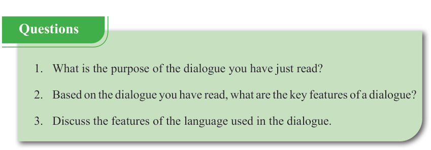

English for Secondary Schools Student’s Book Form One, printed page 174
I think the government should implement policies to promote environmental conservation.
That is true, Jamal! However, we all need to be part of the solution by conserving water, reducing waste, and using energy wisely. Together, we can protect our environment for future generations.
[Smiles] There’s a lot we can do, Jamal. We should also promote tree planting and reforestation. Additionally, we need to educate others about environmental issues.
[Inspired] I’m going to start by planting more trees in our village and teaching others about caring for the environment.
[Proudly] That’s great, Jamal. Every small action counts!
Does anyone have anything more to share before we end our discussion? Jamal? Nyenza?
(In unison) Nothing!
OK! Thank you all for the fruitful discussion. See you next time.
